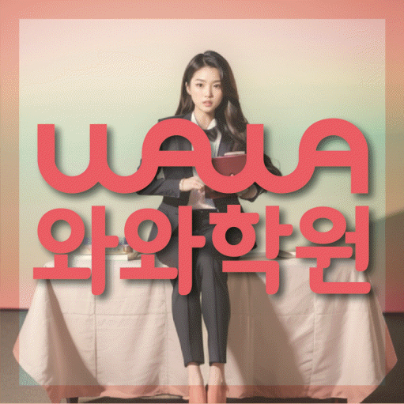

국어 수업 가능 학년
상담 시 가능 학년 확인
KOREAN · ENGLISH · MATH LOCAL GUIDE
신창동 국영수학원 선택 전에 확인할 내용을 안내합니다. 광주 광산구 신창동의 중학교 3학년 학생을 기준으로 세 과목 학습 설계, 학교 자료별 내신 확인, 그룹수업 판단 기준과 FAQ를 제공합니다.
30초 핵심 안내
결론부터 말하면 신창동 국영수학원은 광고 문구의 수보다 진단 근거와 계획 수정 방식으로 비교해야 합니다. 특히 중학교 3학년 학생 가운데 시험 후 틀린 문제를 개념·계산·조건 해석으로 분류하지 않는 편이면서 숙제를 시작할 시각을 정하지 않아 자주 미루는 학습 패턴을 가진 유형에게는 무조건 빠른 진도보다 현재 교재와 최근 평가에서 반복되는 문제를 찾는 과정이 먼저입니다. 신창동에서 알아볼 때는 확인 가능한 학교 정보와 최근 시험 자료를 함께 대조하고 그룹수업 관련 시간·비용·절차가 실제 학습 계획과 충돌하지 않는지도 확인해야 합니다. 센터 위치는 광주 광산구 신창로 129 상민빌딩 302입니다. 신창동의 평일 귀가 일정에 넣어 현실적으로 계산하는 편이 좋습니다.
신창동은 수업 가능 생활권 기준입니다. 실제 방문 센터는 와와학습코칭센터 신창점이며, 주소와 등록 정보는 아래 센터 기준 정보에서 확인할 수 있습니다.
상담 시 가능 학년 확인
초1 · 초2 · 초3 · 초4 · 초5 · 초6 · 중1 · 중2 · 중3 · 고1 · 고2
초1 · 초2 · 초3 · 초4 · 초5 · 초6 · 중1 · 중2 · 중3 · 고1 · 고2



신창동 파리바게트 1호점 3층입니다.
센터 기준 정보
센터명·주소·등록 정보와 교습비 확인 경로를 상담 전에 살펴볼 수 있도록 정리했습니다.
광주 광산구 신창동 상담 기준
광주 광산구 신창로 129 상민빌딩 302
광주서부교육지원청 등록 제6884호
실제 수업 가능 시간은 학년·과목별 일정에 따라 상담에서 확인합니다.
동네명은 수업 가능 지역을 찾기 위한 안내 기준입니다.
신창초 · 수문초
진흥중 · 신창중 · 진흥중
숭덕고 · 성덕고 · 운남고 · 장덕고
센터명·주소·등록번호·가능 학년·학교 참고 정보는 제공된 센터 자료를 기준으로 정리했으며, 실제 수업 범위와 일정은 상담에서 다시 확인합니다.
지역별 학습 안내
학생의 과목별 학습 상황과 상담 전에 확인할 기준을 여섯 가지 주제로 나누어 정리했습니다.
신창동 국영수학원의 적합성을 살필 때는 중학교 3학년 학생 가운데 시험 후 틀린 문제를 개념·계산·조건 해석으로 분류하지 않는 편이면서 숙제를 시작할 시각을 정하지 않아 자주 미루는 학습 패턴을 가진 유형을 먼저 떠올릴 수 있습니다. 지역 내 반 배정 전에는 중학교 3학년 학생이 맞힌 문제와 틀린 문제를 모두 설명하게 해 운으로 맞힌 문항과 확실히 아는 문항을 구분한 뒤 판단해야 합니다.
신창동에서 수업 적합성을 판단할 때는 첫날의 만족도보다 3~4주 뒤 학생이 자신의 약점과 다음 과제를 설명할 수 있는지를 확인하는 편이 정확합니다. 신창동 학부모에게 필요한 결론은 빠른 선행보다 현재 공백을 확인하고 한 주 단위로 계획을 고치는 과정이 우선이라는 점입니다.
신창동의 중학교 3학년 국어·영어·수학은 같은 방식으로 관리할 수 없으므로 그룹수업 관련 조건과 별개로 과목별 진단 단위를 먼저 나누어야 합니다.
지역 내의 수학 수업에서는 개념 설명, 기본 예제, 조건 변형, 시간 제한 문제를 구분하고 며칠 뒤 빈 종이에 다시 풀게 해야 합니다. 이 지역 국영수학원의 영어 점검에서는 교과서와 프린트 표현을 확인하면서 문장 배열·빈칸·서술형 변형에 대비하고 듣기 오답도 따로 누적해야 합니다.
이 지역의 중학교 3학년 과목 구성에서 국어 계획에서는 작품 내용 암기와 독해 실력을 구분하고 문단별 핵심 문장을 자신의 말로 요약하게 해야 합니다. 신창동 국영수학원에 과목별 기록이 남으면 그룹수업 관련 조건과 실제 학습 계획을 혼동하지 않고 다음 주 조정 내용을 확인할 수 있습니다.
광주 광산구 신창동 학습 상담에서 참고할 학교에는 신창초·수문초·진흥중·신창중·숭덕고·성덕고·운남고·장덕고가 포함됩니다. 학교별 준비는 공통 개념을 유지하면서도 학년과 교재, 수행평가 일정을 학생 단위로 다시 확인해야 구체화됩니다. 학교별 준비를 판단할 때는 신창동 학생의 평가 자료가 과제량과 오답 일정에 실제로 반영되는지 확인하세요.
해당 생활권 학부모가 생활 조건으로 확인할 부분은 광주 광산구 신창로 129 상민빌딩 302까지의 이동과 수업 뒤 복습 시간이며, 등원에 시간이 많이 들면 과제를 미루지 않도록 시간표에서 이동·식사·휴식 시간을 먼저 빼 두어야 합니다.
신창동 국영수학원 상담에서 그룹수업을 묻는다면 한 문장 설명보다 담당자, 적용 시점, 확인 자료를 질문해야 합니다. 신창동 기준으로는 수업 이름보다 한 회 안에서 설명, 학생 풀이, 질문, 채점, 오답 정리 시간이 어떻게 배분되는지를 살펴야 합니다.
해당 학원에서 그룹수업을 설명할 때는 정규·특강·집중·개별 수업을 선택할 경우 현재 약점, 학교 일정, 과제 소화 가능 시간을 기준으로 지속 가능한 강도를 정해야 합니다. 그룹수업은 특히 수업 명칭보다 설명·학생 풀이·질문·채점·오답 정리의 실제 시간 배분을 확인해야 합니다.
신창동 학부모가 마지막으로 확인할 점은 다음과 같습니다: 수준별 또는 맞춤형이라는 표현은 진단 결과가 교재·진도·숙제량·피드백 문장에 실제로 달라질 때 의미가 생깁니다. 학생과 보호자가 상담 내용을 각자의 언어로 다시 말할 수 있어야 실제 실행 계획도 같은 방향으로 맞출 수 있습니다.
신창동의 수업 뒤 48시간은 이해를 기억으로 바꾸는 구간이므로 중학교 3학년 학생이 당일 핵심을 가리고 말하고 이틀 안에 대표 문항을 다시 풀 수 있는지 확인해야 합니다. 세 과목 학습관리 상담에서 실제 주간 기록 양식을 요청하면 학습관리라는 표현이 구체적인 절차로 이어지는지 볼 수 있습니다.
신창동 국영수학원의 가정 연계에서는 보호자가 정답을 대신 확인하기보다 시작 여부와 마감 여부를 묻고 구체적인 오답 지도는 수업 담당자가 맡도록 역할을 나눌 수 있습니다. 세 과목 학습관리의 규칙적인 기록은 숙제를 시작할 시각을 정하지 않아 자주 미루는 학생도 왜 계획이 바뀌는지 이해하고 같은 실수를 줄이는 데 도움을 줄 수 있습니다.
이 지역 국영수 과정을 선택하기 전 보호자와 학생이 함께 확인할 항목은 다음과 같습니다: ① 최근 시험지를 수업 계획에 어떻게 반영하는가 ② 국어·영어·수학별 피드백은 무엇이 다른가 ③ 결석 보강과 약점 보충을 구분하는가 ④ 보호자에게 어떤 내용을 어느 주기로 알리는가 ⑤ 그룹수업 관련 선택을 하지 않거나 조건이 달라도 기본 학습관리가 가능한가 ⑥ 첫 한 달 뒤 계획 수정 기준은 무엇인가.
신창동의 첫 달 목표는 큰 점수 변화보다 출결 안정, 과제 시작, 질문 기록, 오답 재풀이처럼 관찰 가능한 행동으로 정하는 편이 좋습니다. 신창동 학부모는 첫 점검 날짜를 등록 전에 정하고 약속한 기록이 실제로 남는지를 그 날짜에 확인하는 편이 안전합니다.
FAQ
이 지역에서는 광주 광산구 신창로 129 상민빌딩 302까지의 이동 외에도 학생 혼자 귀가하는 날, 보호자 픽업이 필요한 날, 수업 후 복습 시간을 구분해야 실제 생활에 맞는지 판단할 수 있습니다.
신창동 보호자는 시작과 마감 여부를 확인하고 구체적인 오답 피드백은 담당 수업에서 맡도록 역할을 나눌 수 있습니다. 신창동 국영수학원에서는 학생의 자율성에 맞춰 확인 범위를 단계적으로 줄이는 방식이 좋습니다.
신창동 국영수학원의 답변이 대상, 기간, 담당자, 비용 또는 시간, 변경 절차와 기록 예시까지 설명하는지 확인하면 됩니다. 해당 생활권에서 일반적인 장점만 반복해 들었다면 추가 질문이 필요합니다.
학생의 학교가 같아도 학년과 담당 교과, 평가 주차에 따라 대비 자료가 달라집니다. 신창동 내신은 공통 학습과 학교별 자료를 구분해 계획하는 것이 안전합니다.
신창동 국영수학원의 첫 2~4주 계획이 수학 약점 한 가지와 숙제를 시작할 시각을 정하지 않아 자주 미루는 습관을 구체적인 행동으로 바꾸는지 보아야 합니다. 신창동 학생이 다음 과제와 그 이유를 설명할 수 있다면 수업 구조를 이해하고 있다는 신호입니다.
상담 상황 예시
아래 사례는 성적 향상을 주장하는 고객 후기가 아니라, 신창동 상담 질문을 구체화하기 위한 상황 설명입니다.
해당 생활권에서 중학교 3학년이 된 뒤 국어·영어·수학 일정이 자꾸 겹쳤습니다. 이 지역 국영수학원을 알아볼 때 그룹수업을 단독 기준으로 보지 않고 학교 자료 반영, 과제 예상 시간, 결석 보완을 함께 질문했습니다. 해당 생활권에서는 당장 큰 결과를 기대하기보다 시작 시각과 미완 이유를 기록하는 계획이 우리 아이에게 더 현실적이라고 느꼈습니다.